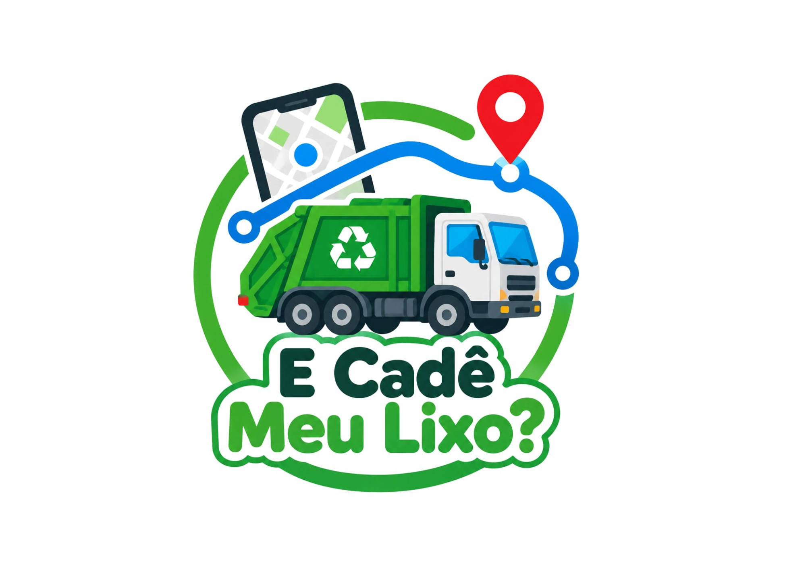

E Cadê Meu Lixo?
Acompanhe o trajeto da coleta em tempo real e saiba exatamente quando o caminhão vai passar na sua rua.

Acompanhe o trajeto da coleta em tempo real e saiba exatamente quando o caminhão vai passar na sua rua.